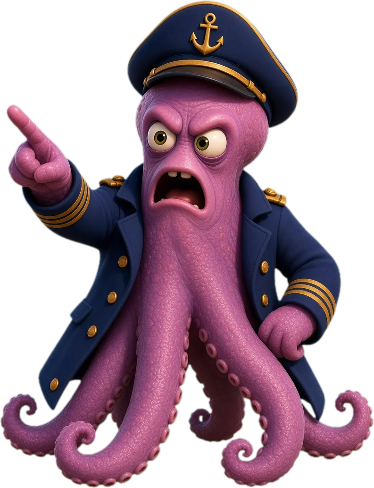

The people behind the Files
About Ghost Ship Files
True shipwreck mysteries. New File every week. Visuals include AI-style recreations, labeled on screen and on this site.
Host
Jeremy White
Jeremy is a Navy Veteran. He served 8 years in the U.S. Navy, 2003–2011, as a Gas Turbine Systems Technician. Today he is a Marine Machinery Mechanic at Puget Sound Naval Shipyard. He hosts Ghost Ship Files and opens each case with Captain Eight.

AI-STYLE RECREATIONCo-host
Captain Eight
Captain Eight is an animated character — the octopus in the coat and hat who opens each File, walks the story, and lands the takeaway. He is not a real captain. The history, when it is history, is real.
What you’ll find here
Each File is a shipwreck mystery, a survival story, or a Navy case, told in a long video with Shorts spun off from it. The Gear page collects the Amazon picks that match each story.
Also from Jeremy: Veteran Edge AI, a veteran-owned business. If you run a business and need a hand, reach out: veteranedge-ai.vercel.app.